Road safety barriers · export support · product-first + project-first
Highway guardrail supply with stronger visuals, clearer specs, and faster export RFQ flow.
Buma Guardrail focuses on highway guardrail systems for distributors, contractors, and project buyers. This page now uses real guardrail assets, real company positioning, and a cleaner conversion structure for W-beam, thrie beam, posts, spacers, terminals, and road safety barrier projects.
W-beam guardrail
Thrie beam systems
Posts · spacers · terminals
Factory-direct export support

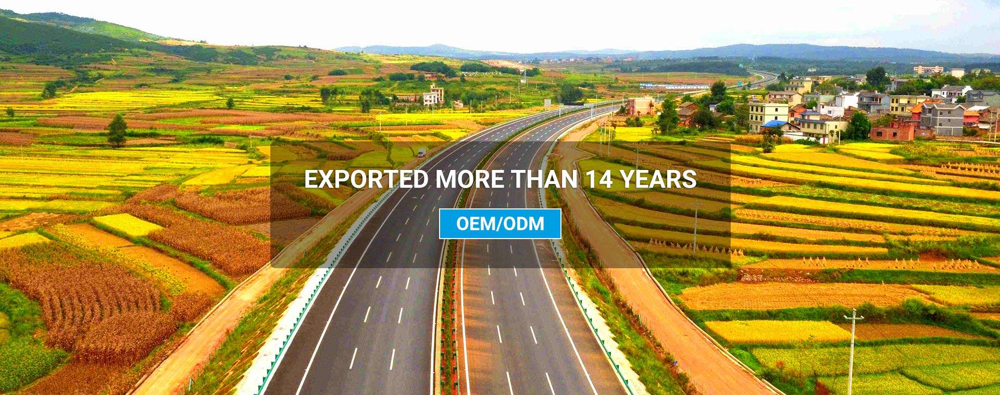
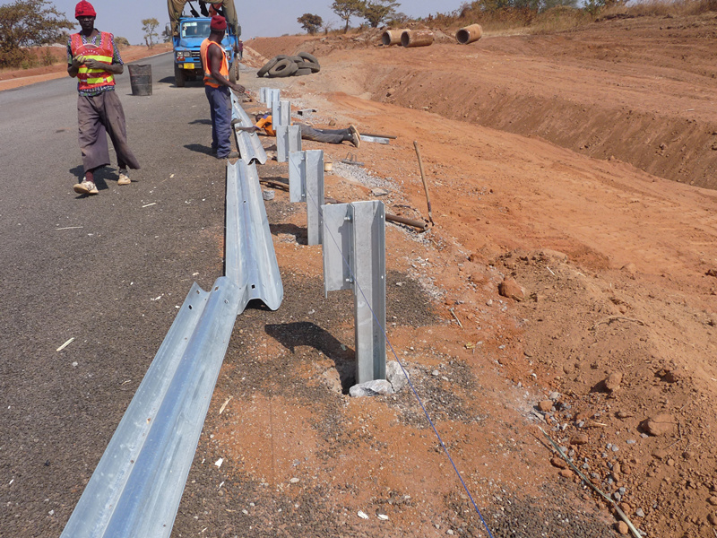
What this version now fixes
- Real guardrail images instead of generic placeholders
- Real Buma / factory positioning instead of empty shell text
- Guardrail product language for the hulan domain
- EN version now paired with a Chinese version
W-Beam Guardrail
Thrie Beam Guardrail
Highway Posts
Spacer Blocks
Terminal Ends
Bridge Barrier Projects
Roadside Safety
Median Protection
Export Packing
Factory Quote
W-Beam Guardrail
Thrie Beam Guardrail
Highway Posts
Spacer Blocks
Terminal Ends
Bridge Barrier Projects
Core products
Six product cards built around real guardrail demand.
This homepage is no longer using fence-only placeholders. It is now anchored to the actual guardrail direction for hulan.buma55.com, with product groupings that overseas buyers expect to see first.

Main line
W-beam guardrail systems
Standard roadside and highway safety barrier route for broad project demand.
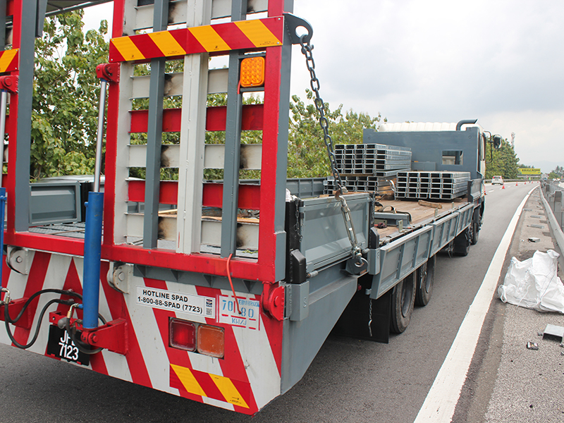
Heavy-duty route
Thrie beam guardrail
Higher-strength option used when stronger protection and impact resistance are needed.
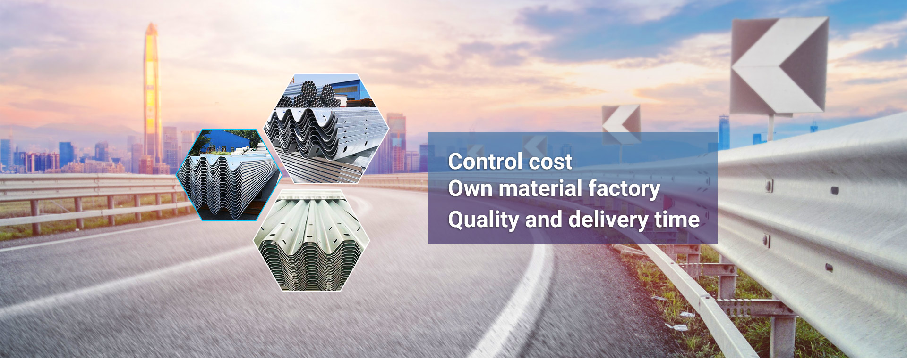
Structure
Posts, blocks, and connection parts
Post types, spacer blocks, bolts, and connection hardware packaged around system scope.

Safety ends
Terminal ends and transition parts
Useful for projects that require clearer scope beyond the basic beam and post quote.
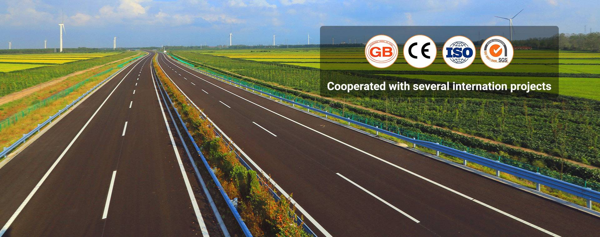
Finish route
Galvanized and anti-corrosion supply
Surface treatment matters for export buyers comparing service life and outdoor durability.
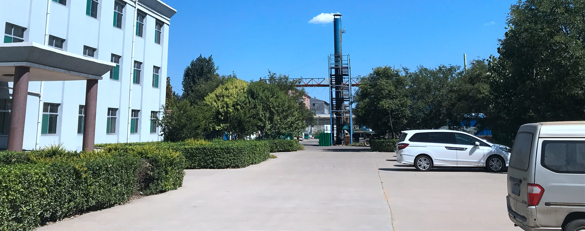
Project supply
Bridge, roadside, and median packages
Built for contractors and project buyers who need complete application matching and export delivery.
Applications
Lead with the guardrail use case, not just the product name.
For road safety buyers, the project environment often matters first: roadside, bridge, highway median, or mountain road. This section makes that route visual and easier to scan.

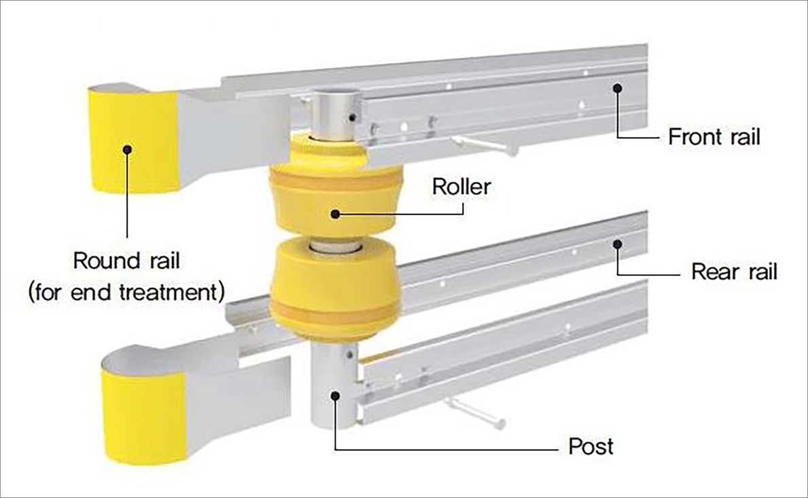
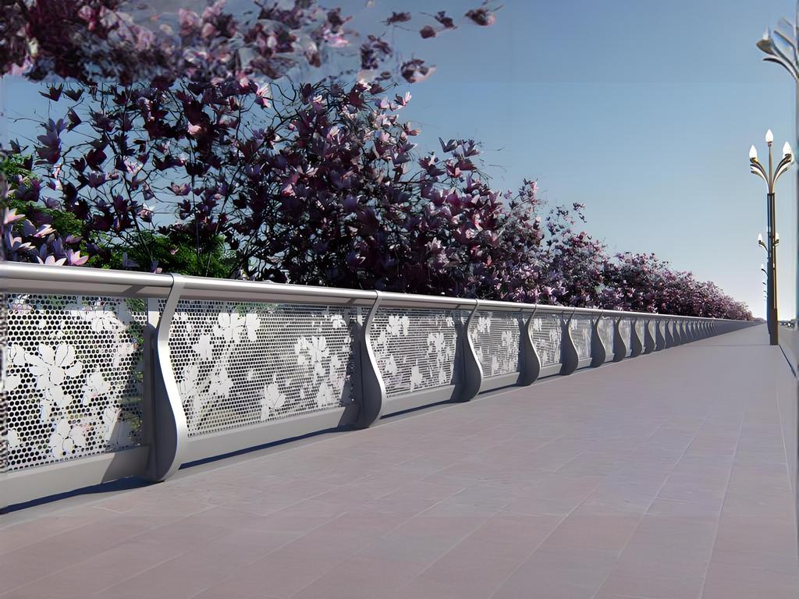
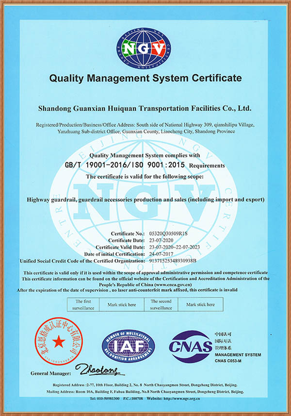
Capability & proof
Factory story, product detail, and export readiness in one screen.
The new homepage now combines Buma-style company positioning with the guardrail visual library, so buyers see real product detail instead of abstract clone text.
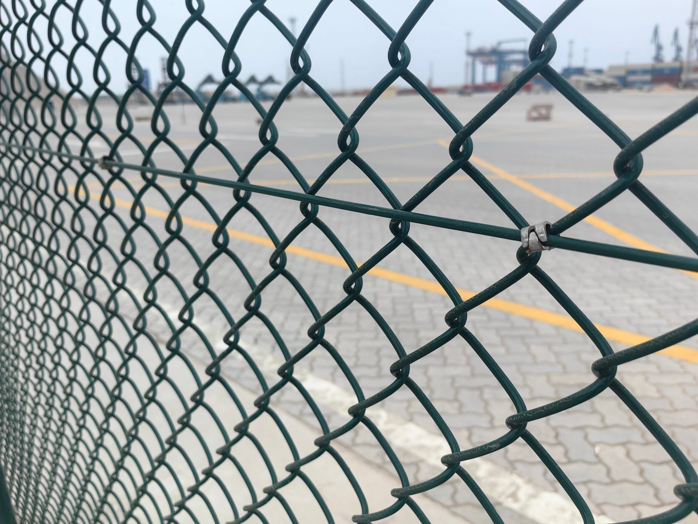
01 · Production
Steel barrier manufacturing and workshop credibility
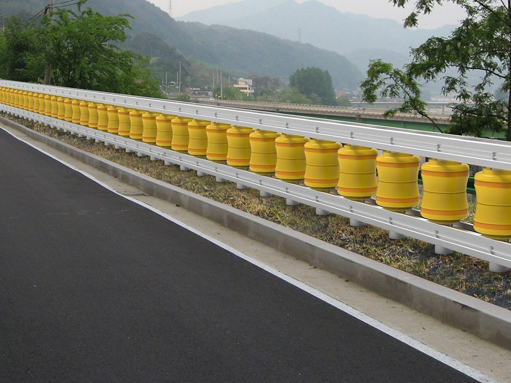
02 · Surface
Galvanized finish and corrosion-resistance proof

03 · Packing
Export packing, bundling, and shipment preparation
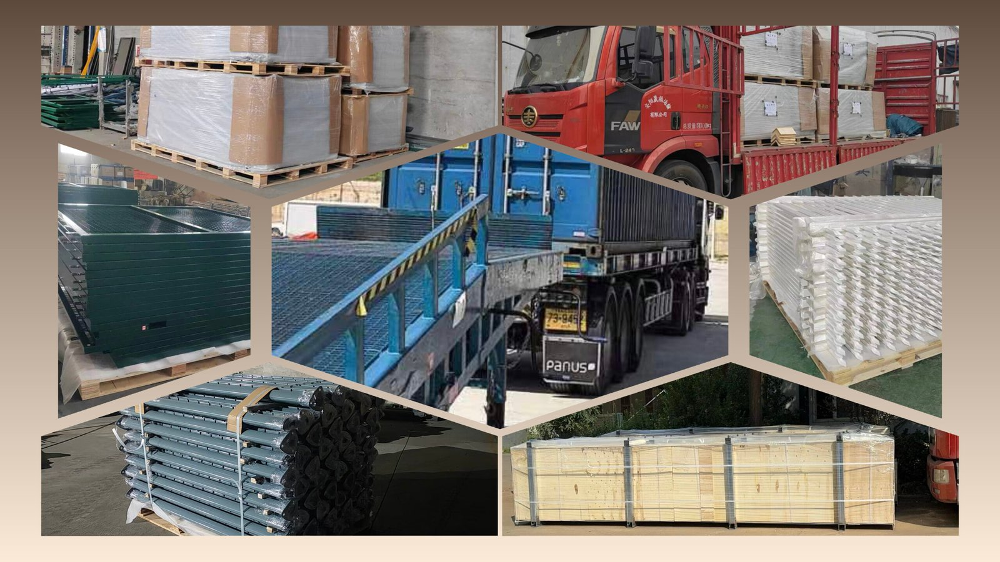
04 · Delivery
Project-ready delivery for overseas distributors and contractors
Articles & buyer topics
Guardrail content blocks are now part of the interface, not left outside the page.
You asked for more than a shell. So this version also adds article-style content modules that can later expand into a real blog cluster under the same domain.
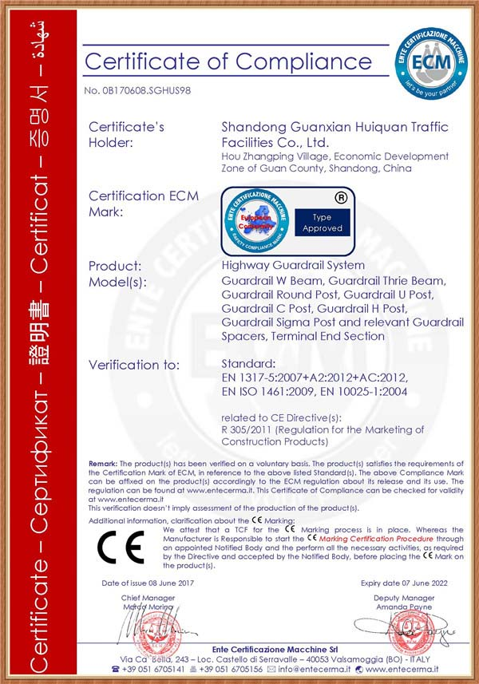
Article topic 01
W-beam vs thrie beam: which route fits the project?
Explain the difference in common use, structure, and when project buyers should upgrade.
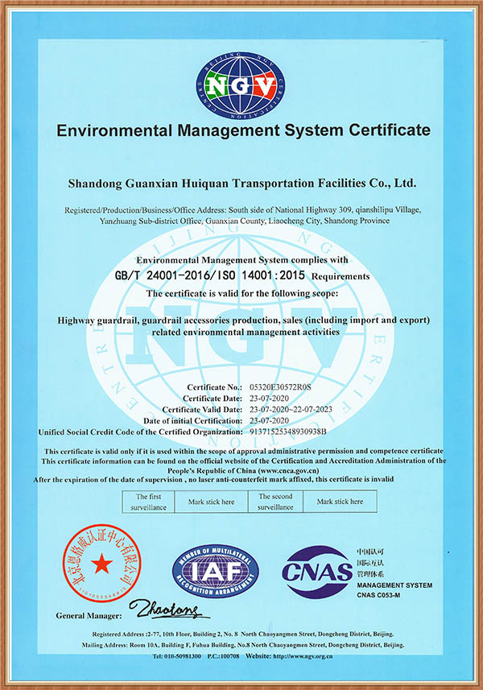
Article topic 02
What overseas buyers ask about galvanized highway guardrail
Focus on coating, corrosion resistance, shipment packaging, and service-life expectations.
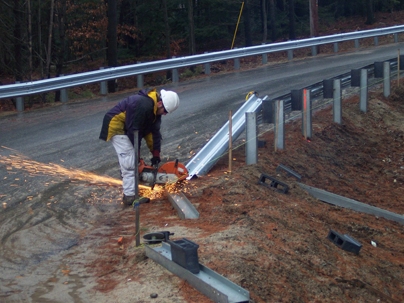
Article topic 03
How to prepare a highway guardrail RFQ before installation starts
Cover beam type, post spacing, project location, finish, and delivery timing in one buyer-friendly brief.
Company & contact
Buma Guardrail is now positioned as a real export guardrail supplier, not a visual draft only.
We have updated this interface with actual guardrail images, actual company positioning, bilingual structure, and real contact paths. If the direction is right, the same system can continue into product pages and article pages under hulan.buma55.com.
WhatsApp: 待确认
Email: contact@hulan.buma55.com
Factory-direct reply
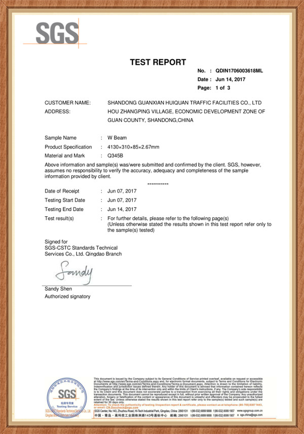
Best RFQ starter pack
- Guardrail type: W-beam / thrie beam / parts
- Project location and road environment
- Quantity, thickness, finish, and post route
- Delivery timing and target market